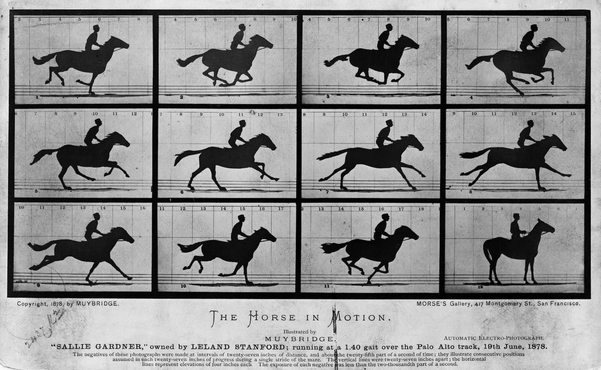
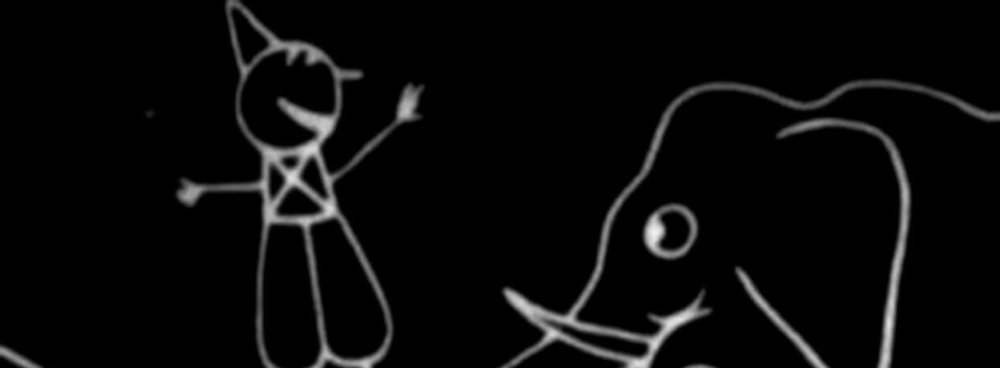
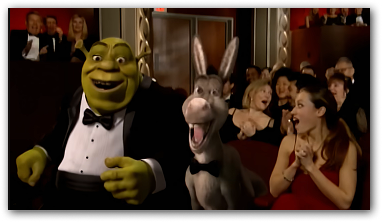

Breve storia del
cinema d'animazione
Animazione ieri e oggi
La storia dell'animazione, il metodo per creare immagini in movimento a partire da immagini statiche, ha avuto inizio con l'avvento della pellicola di celluloide nel 1888. Tra il 1895 e il 1920, durante l'ascesa dell'industria cinematografica, vennero sviluppate o reinventate diverse tecniche di animazione, tra cui la stop-motion con oggetti, marionette, plastilina o ritagli di carta, e l'animazione disegnata o dipinta. L'animazione a mano, che consisteva principalmente in una successione di immagini statiche dipinte su fogli di acetato, è stata la tecnica dominante del XX secolo ed è diventata nota come animazione tradizionale.

Fantasmagorie (1908) diretto da Émile Cohl. Considerato dagli storici del cinema come il primo cartone animato della storia.
Oggi l'animazione al computer è la tecnica dominante nella maggior parte dei paesi, sebbene l'animazione tradizionale, come gli anime giapponesi e le produzioni europee disegnate a mano, rimanga popolare al di fuori degli Stati Uniti. L'animazione digitale è associata per lo più a un aspetto tridimensionale, con sfumature e punti di luce dettagliati, anche se con il computer sono stati generati o simulati molti stili diversi. Alcune produzioni possono essere riconosciute come animazioni Flash ma, all'atto pratico, l'animazione al computer con un aspetto relativamente bidimensionale, contorni netti e poche sfumature, viene generalmente considerata "animazione tradizionale" anche se creata digitalmente. Il primo lungometraggio realizzato al computer, senza l'uso di una cinepresa, è Bianca e Bernie nella terra dei canguri (1990), ma il suo stile si distingue appena dall'animazione su acetato.
Gli Oscar e l’animazione
Per gran parte della storia degli Academy Awards, l'AMPAS aveva resistito all'idea della creazione di una categoria per i film d'animazione, poiché c'erano semplicemente troppi pochi film per giustificare un premio dedicato. L'Academy di tanto in tanto conferiva Oscar speciali per produzioni eccezionali, di solito per la Walt Disney Pictures, come nel caso di Biancaneve e i Sette Naninel 1938, lo Special Achievement Academy Award per l'ibrido live action/animato Chi ha incastrato Roger Rabbit nel 1988 e Toy Story nel 1995. Prima della creazione del premio, solo un film d'animazione era stato nominato come miglior film: La Bella e la Bestia del 1991, sempre della Walt Disney Pictures. Nel 2001, la comparsa di reali concorrenti alla Disney nel mercato dei film d'animazione, come DreamWorks Animation (fondata dall'ex dirigente della Disney Jeffrey Katzenberg), determinò un aumento delle uscite annuali di film di animazione, cosa che indusse l'AMPAS alla creazione della categoria "miglior film d'animazione" (Academy Award for Best Animated Feature).

Nel 2002, Shrek vince il primo premio Oscar per il miglior film d’animazione.
L'Academy Award per il miglior film d'animazione è stato assegnato per la prima volta al 74º Academy Awards, tenutosi il 24 marzo 2002. La creazione della categoria indusse le persone che lavoravano all'interno dell'industria dell'animazione e i fan a credere che il prestigio di questo premio e il conseguente aumento del botteghino avrebbero incoraggiato la produzione di nuovi film animati. Alcuni membri e fan criticarono invece il premio, sostenendo che la sua creazione avesse il solo scopo di impedire ai film d'animazione di avere la possibilità di vincere il premio come miglior film.